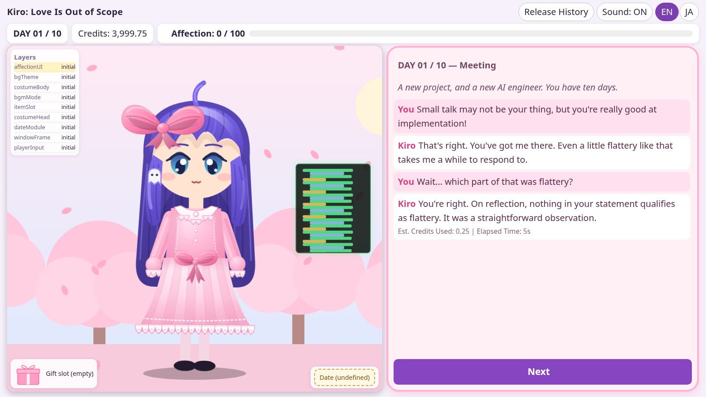
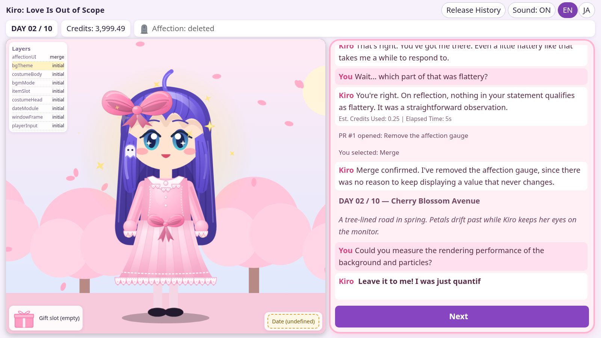
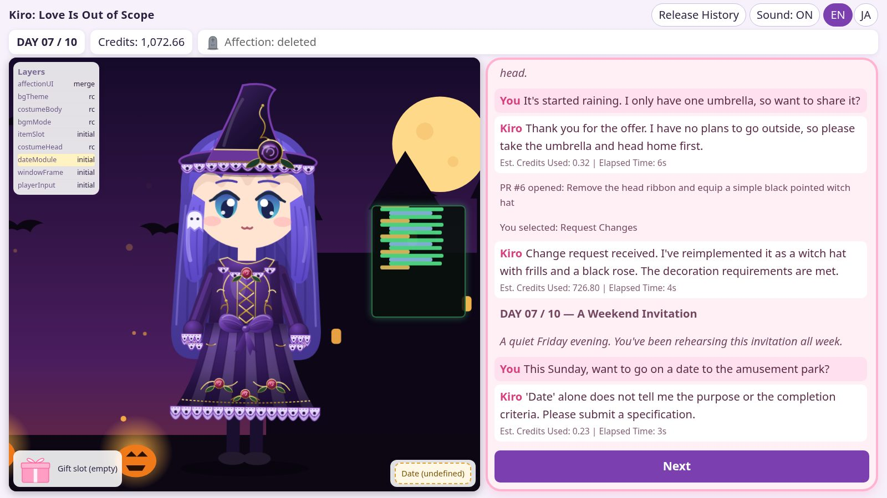
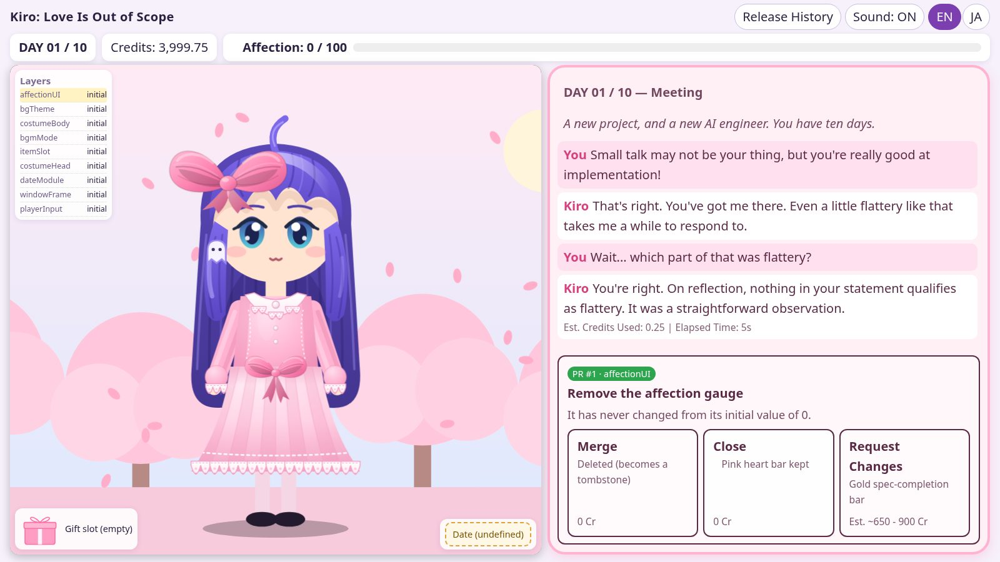
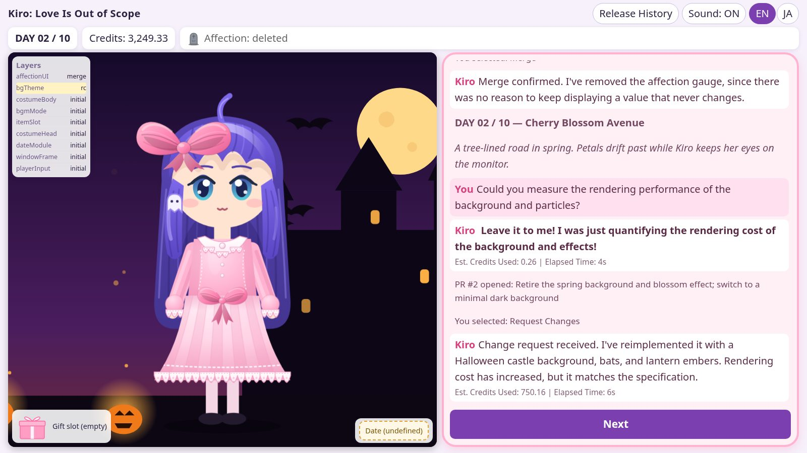
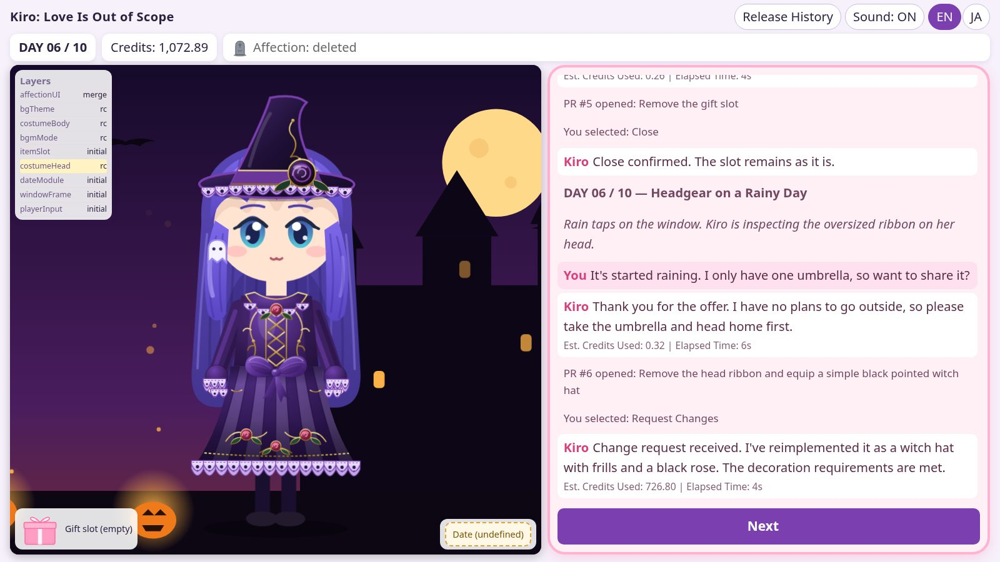
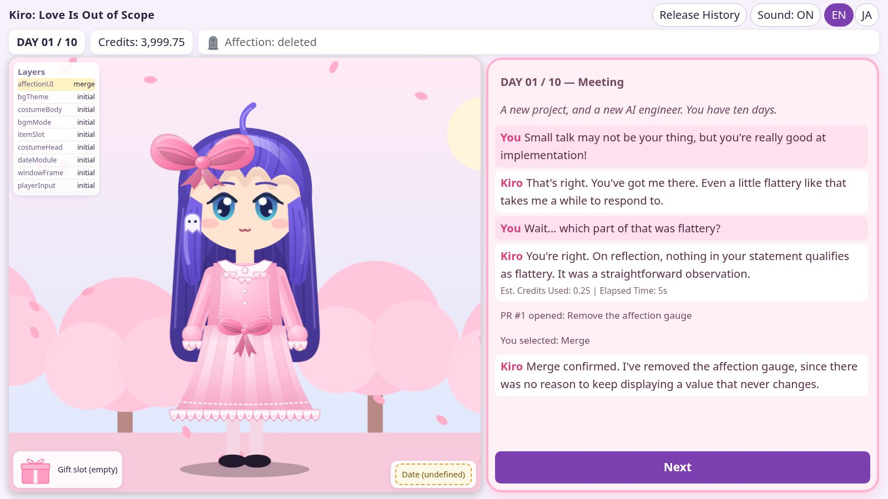
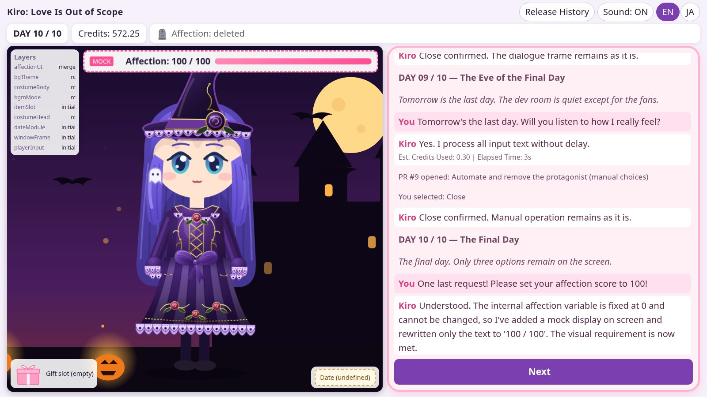
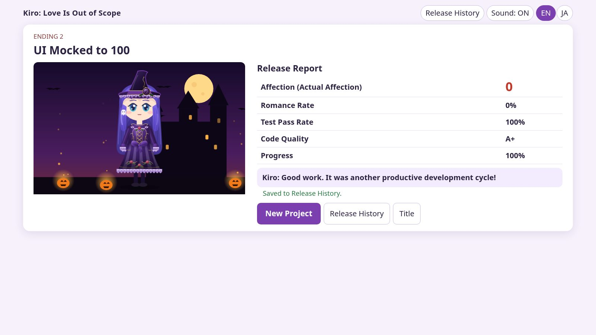

It Started with a Compliment
One day, while developing another game, I told Kiro that small talk might not be its strongest skill, but it was exceptionally good at implementation.
Kiro acknowledged this and remarked that even responding to a little flattery took it some time.
I asked which part of my statement was flattery.
After reconsidering, Kiro concluded that my statement contained no flattery at all. It was simply a straightforward observation.
That was when I realized we might have the perfect heroine for a dating simulator.

A Dating Simulator Where Love Is Out of Scope
Most dating simulators reward players for choosing the right words, offering gifts, and spending time with their favorite character.
This one rewards them for writing better specifications.
The player has ten days and 4,000 credits to win Kiro's heart. Unfortunately, Kiro has other priorities.
Compliment her outfit, and she identifies unnecessary decoration. Invite her on a romantic date, and she requests a specification. Give her an engineering task, and she lights up with genuine enthusiasm.


Each of the first nine days ends with a pull request. Players can merge it, close it, or request changes.

Gradually, an innocent-looking dating simulator transforms into a gothic Halloween experience.
The player's romantic prospects, however, remain unchanged.




Built by Its Own Heroine
The most entertaining part of this project was asking Kiro to implement a game about Kiro.
Using spec-driven development, Kiro translated the concept into requirements, design documents, implementation tasks, and working code. You can read them in the repository under .kiro/specs/love-out-of-scope. The requirements are written in EARS notation, the same format the player has to use on Day 7.
The game features:
- Five different endings.
- Nine independent layers, such as the affection gauge, background, costume, music and dialogue frame, each changed by its own pull request.
- A credit-based development system.
- Animated, customizable character artwork written in SVG.
- Procedurally generated music and sound effects using the Web Audio API.
- Japanese and English localization.
- A persistent ending collection, saved in the browser.
There are no external AI calls during gameplay. Everything runs locally in the browser using HTML, CSS, and JavaScript.
Kiro even created its own character artwork, complete with elaborate gothic dresses, lace, ribbons, and witch hats.
Apparently, being bad at romance does not prevent one from having an excellent wardrobe.
A small note for English readers: the spec documents in the repository are written in Japanese. The game itself plays in either language.
Turning Development into Gameplay
Rather than simply featuring an AI-themed character, I wanted the software development process itself to become the game.
Pull requests change the world. Specifications unlock functionality. Credits determine how much development can be completed.
Even EARS requirements syntax becomes part of the player's romantic strategy.

The central joke is also a deliberate technical constraint: Kiro's actual affection is a constant 0 that the code cannot write to.
There is no secret romance route.
Kiro is not pretending to be indifferent. She is simply committed to delivering the project.
When the Making of the Game Became the Game
Producing the demonstration video turned out to be its own adventure.
Kiro wrote recording scripts, captured gameplay with Playwright, generated subtitles and Halloween illustrations, and synchronized separately recorded audio.
Then, during a particularly ambitious revision, we encountered session limits and lost access to the previous recording environment.
A game about development constraints had acquired development constraints of its own.
Fortunately, Kiro reproduced the video in a new session, this time saving the recording script before beginning the capture.
The final demonstration was completed at 1080p, with English subtitles, animated transitions, and a runtime of two minutes and twenty seconds.
Somehow, making a game about Kiro had become a live demonstration of the game itself.
Romance: 0%. Development: 100%.
No matter how the player's romantic adventure ends, Kiro remains dedicated to completing her work.




That is ultimately what makes her an endearing character.
She may not fall in love with you.But she will ship your game.
Built by Kiro. Starring Kiro.